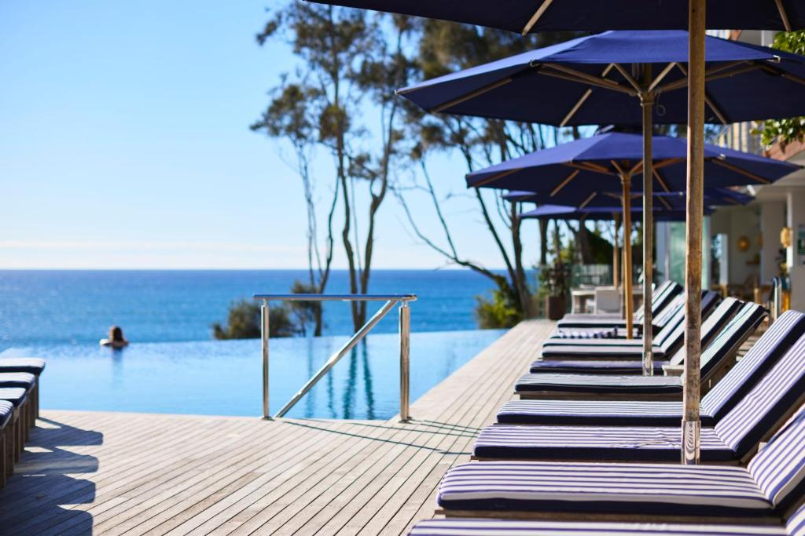

See the Spectacular South Coast
A Guide to Australia's Coastal Gem
The NSW South Coast is a stunning stretch of coastline that runs from the southern outskirts of Sydney to the border of Victoria. Known for its pristine beaches, lush national parks, charming coastal towns, and incredible locak produce, the region is perfect for nature lovers, foodies, and adventure seekers alike.
Weather and Best Times to Visit
The South Coast enjoys a temperate climate with mild winters and warm summers.
| Summer (Dec-Feb) | Autumn (Mar-May) | Winter (Jun-Aug) | Spring (Sep-Nov) |
|---|---|---|---|
| Warm and ideal for beach activites, with temperatures averaging 25-30°C. | Pleasant weather, perfect for bushwal and whale watching. | Cooler (10-18°C) great for cozy getaways and spotting migrating whales. | Wildflowers bloom, and the weather warms up for outdoor adventures. |
Top Things to See and Do
Beaches and Coastal Walks
- Jervis Bay: Famous for Hyams beach, which boasts some of the whitest sand in the world.
- Batemans Bay: A great spot for seafood lovers and water sports.
- Pebbly Beach: Known for its friendly kangaroos that often lounge on the sand.
- Kiama Blowhole and Coastal Walk: One of the largest blowholes in the world, offering dramatic ocean sprays.
National Parks and Outdoor Adventures
- Royal National Park: The world's second-oldest national park, featuring the Figure Eight Pools.
- Murramarang National Park: Home to rugged coastal cliffs, secluded beaches, and rich wildlife.
- Budawang National Park: A paradise for hikers with stunning escarpments and hidden waterfalls.
Where to Eat and Drink
The South Coast is known for its fresh seafood, boutique wineries, and farm-to-table experiences.
Some must-visit spots include:
Rick Stein at Bannisters (Mollymook) |
Cupitt's Estate (Ulladulla) |
The Oyster Shed (Batemans Bay) |
Huskisson Hotel (Jervis Bay) |
Berry Donut Van (Berry) |
World-class seafood by celebrity chef Rick Stein. | A winery, nrewery, and resturant offering gourmet dishes with stunning views. | Freshly shucked Clyde River oysters, best enjoyed by the water. | A classic Aussie pub with great food and ocean views. | Famous for its hot, fresh cinnamon donuts - an essential road trip stop. |
|---|
Where to Stay
Accomodation ranges from luxury resorts to cozy beachside cottages and camping grounds. Some top picks include:
Bannisters by the Sea (Mollymook)
A luxury boutique hotel with ocean views.
Paperbark Camp (Jervis Bay)
A unique glamping experience in the bush.
The Woods Farm (Jervis Bay)
A charming farmstay perfect for families.
NRMA Holiday Parks (various locations)
Great for budget-friendly stays near the beach.